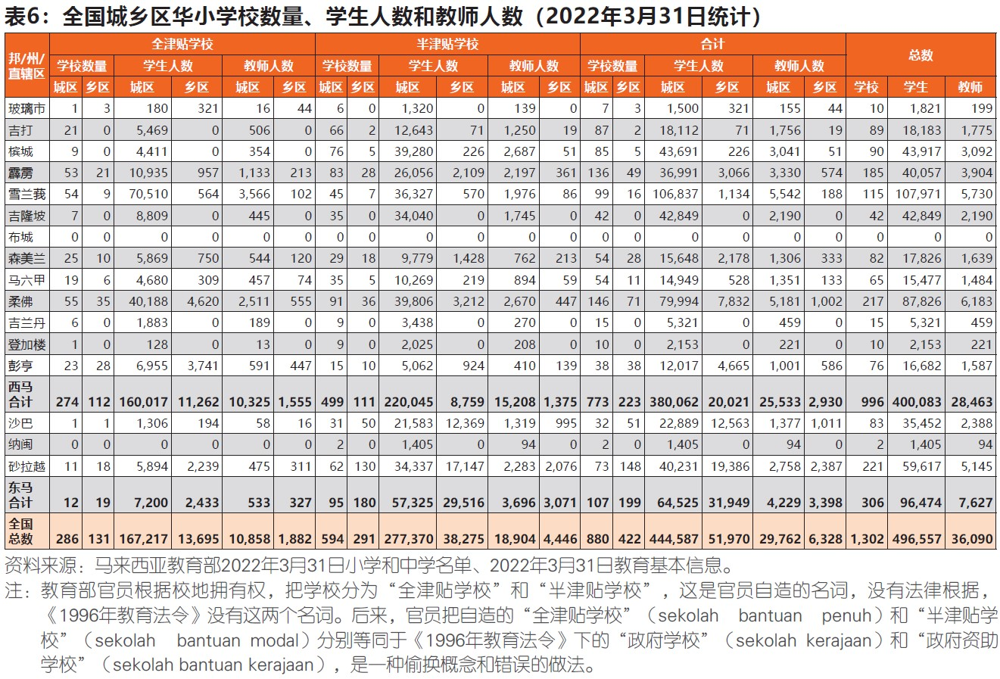
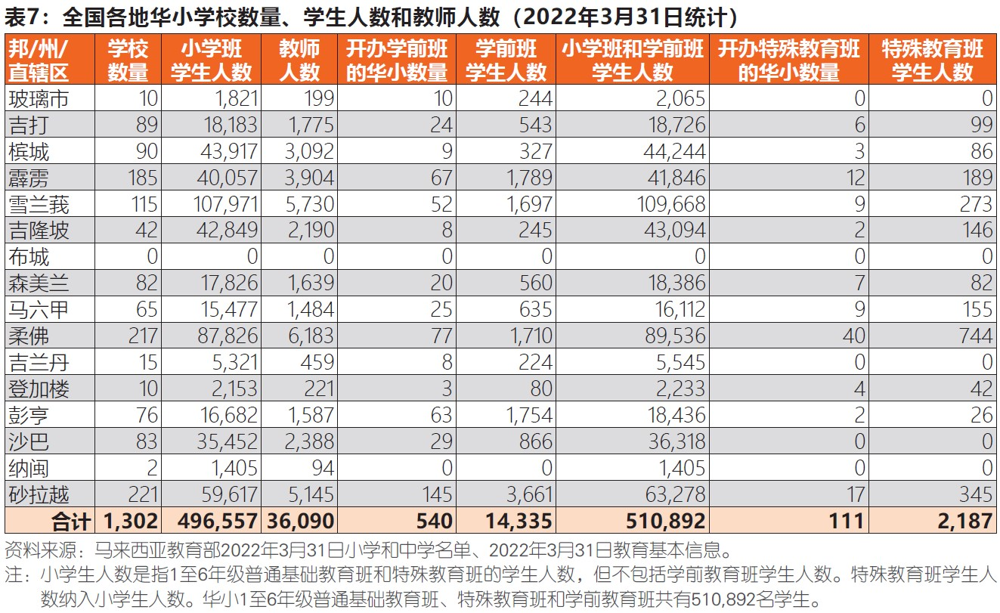
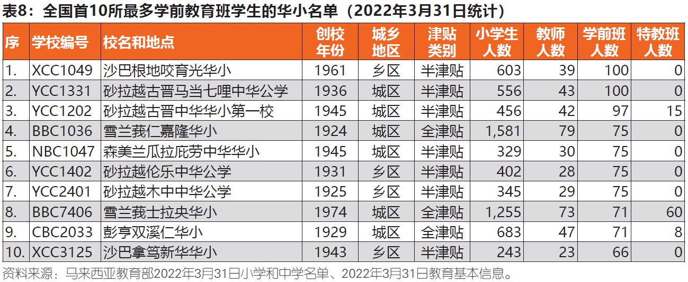
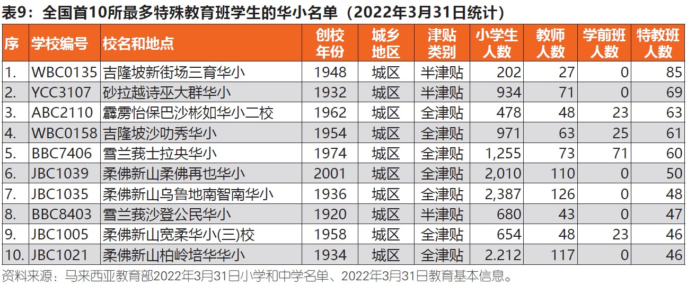
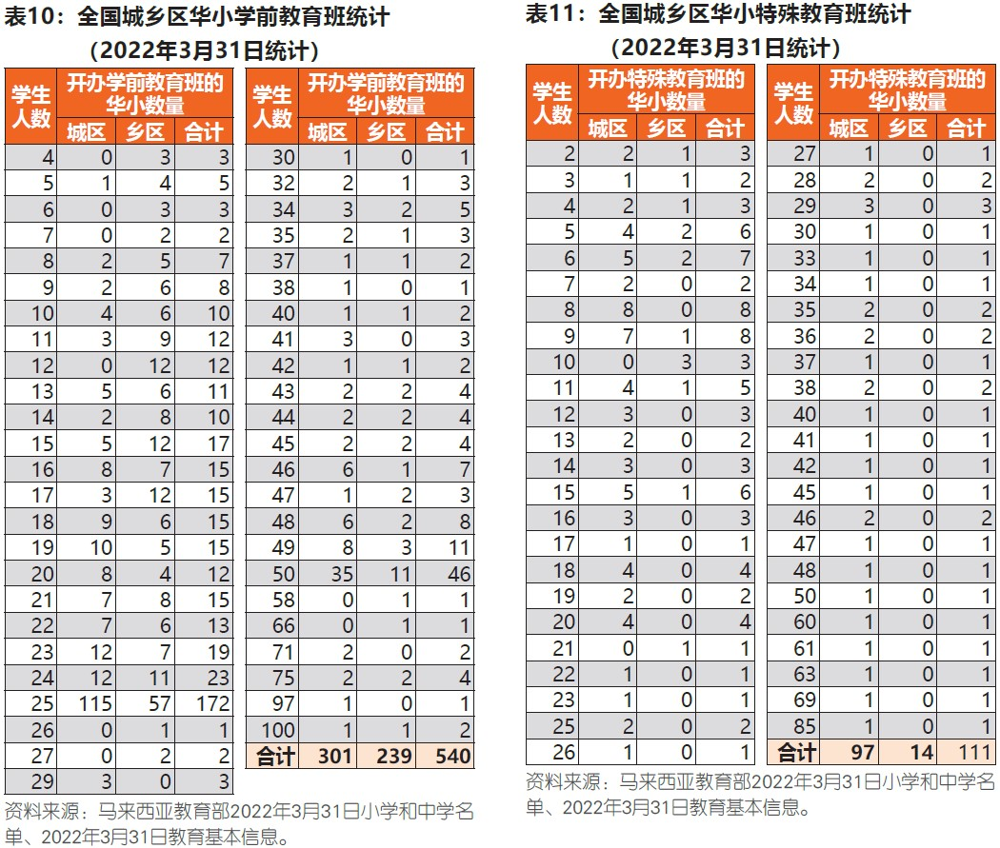

马来西亚华文小学发展概况（下篇）
2022年第1期《华教导报》曾刊登“马来西亚华文小学发展概况”的上篇，本期则续谈该文的下篇。
五、学校津贴类别和城乡师生人数
表6显示，截至2022年3月31日统计，全国有1,302所华小。教育部根据学校土地拥有权把其中的417所华小（32.03%）列为“全津贴学校”（sekolah bantuan penuh），共有180,912名学生（36.43%）；另885所华小（67.97%）列为“半津贴学校”（sekolah bantuan modal），共有315,645名学生（63.57%）。
西马996所华小（76.50%）有400,083名学生（80.57%）；东马的306所华小（23.50%）有96,474名学生（19.43%），即纳闽和沙巴共85所华小（6.53%）有36,857名学生（7.42%），砂拉越221所华小（16.97%）有59,617名学生（12.01%）。
城区华小有880所（67.59%）和444,587名学生（89.53%），乡区华小有422所（32.41%）和51,970名学生（10.47%）。尤其需注意，教育部所指城区学校的学校数量、学生人数、教师人数，全津贴学校和半津贴学校的统计数字是不太准确的。因经翻查被教育部列入城区的华小名单，发现其中某些华小，例如小镇外的华小，其实从地理环境和地方发展上是处于乡区，但在行政上被教育部列入“城区”，导致这些乡区华小被列为“城区华小”。简言之，教育部根据城区所计算的华小各类统计数字过于高估，乡区华小的则过于低估。
六、华小普通基础教育、特殊教育和学期教育
全国1,302所华小有496,557名学生（含2,187名特殊教育班学生），14,335名学前教育班学生，36,090名教师（表7）。有些华小也开办学前教育班，或特殊教育班，或学前教育班和特殊教育班两者皆开办。
回顾2002年，教育部宣布将分阶段在全国各源流小学开办学前教育班。直至2011年1月31日统计，全国1,291所华小当中的417所（32.30%）华小有开办学前班，共10,703名学生。其实，有一些华小董事会早在1960年代已开办华文源流幼儿园，比教育部推行小学附属学前教育班的政策早了近40年。另一些华小董事会在早期已开办了幼儿园，该华小后来也开办教育部学前班。
根据2022年3月31日统计，全国1,302所华小当中的540所（41.47%）华小开办学前班，只有14,335名学生，人数很少。由此可见，许多适龄的华裔幼童在私立幼儿园接受学前教育。全国有301所城区华小、239所乡区华小开办学前班。各华小学前班人数介于4至100名学生。
全国111所（8.53%）华小开办特殊教育班有2,187名学生。其中，97所城区华小、14所乡区华小开办特教班。各华小特教班人数介于2至85名学生。玻璃市、吉兰丹、沙巴、纳闽的华小没有开办特教班。吉隆坡华裔人口众多，却只有2所华小（沙叻秀华小和新街场三育华小）开办特教班。雪兰莪有9所华小开办特教班。有些华小的特教班学生人数爆满，导致一些特殊孩童未能如愿入读。在私立特殊教育学校方面，吉隆坡只有1所，雪兰莪则没有。由此需探讨和努力在有需求的地区，包括在雪隆的更多华小开办特教班，而沙巴也应有一些华小开办特教班。
亦须注意，所开办的特教班应分散在各社区的华小，避免太过集中在几所华小，以尽可能靠近特殊孩童家长居住区，方便就近上学和接送。这就需要州教育局、有关华小和家长的配合，提前几年为特殊孩童报读特教班，并通过州城市与乡村规划局的地理信息系统（Geographic Information System, GIS）的技术支援下，进行妥善和专业的规划，以物色地点合适及有空间和资源条件的华小开办特教班。此机制亦可用于其他源流小学开办特教班。
全国有28所（城区25所，乡区3所）由教育部设立的特殊教育国小（SK Pendidikan Khas），但没有特殊教育华小和特殊教育淡小。除了在一些华小开办特殊教育班（Kelas PPKI/Program Pendidikan Khas Integrasi，全称“特殊教育综合课程班”），也可探讨和努力在一些地区由教育部或民间社会设立特殊教育华小（SJK(C) Pendidikan Khas），提供更完善的华小特殊教育。
  七、结语
华小学前教育班和特殊教育班以及微型华小，是需获得教育部和社会各界重视的课题。教育部在华小推行附属学前教育班的同时，也应提供常年拨款补助、幼教师资培训、幼教儿童学费补助等惠民措施，以支持华小董事会所办幼儿园的教育发展。此外，有关方面可物色一些在特殊教育办学方面有杰出表现的华小，并加以推广让各源流学校借鉴和学习其宝贵的实践经验。
各微型华小可按各校和社区的具体实况，探讨和开办学前教育班、特殊教育班、安亲班，以满足不同家长群对孩子的教育需求和生活安排，招收各年龄层学生，为学校增加学生来源，振兴学校。有些微型华小在不断努力后，提升了办学表现，亦扩大了学生来源区，学生人数有显著增加。这是具有研究价值的课题，剖析这些学校所处的社区环境以及采取的具体措施，进而成功自救和振兴学校，不需迁校，办出特色，小而美，小而优秀，学生积极成长，校园、教学和学习环境都获得改善。
沙巴“国民华小”，西马某些州政府和砂拉越某些地方政府在早期所创办的华小或接管民办的华小，以及砂拉越“双源流华小”、“双源流国小”和“政府小学”，也是具有研究价值的课题。这些研究可剖析事情来龙去脉，厘清这类学校从过去至今在沙巴、砂拉越和西马的学校注册法令、教育法令下所享有的地位、权利和利益。